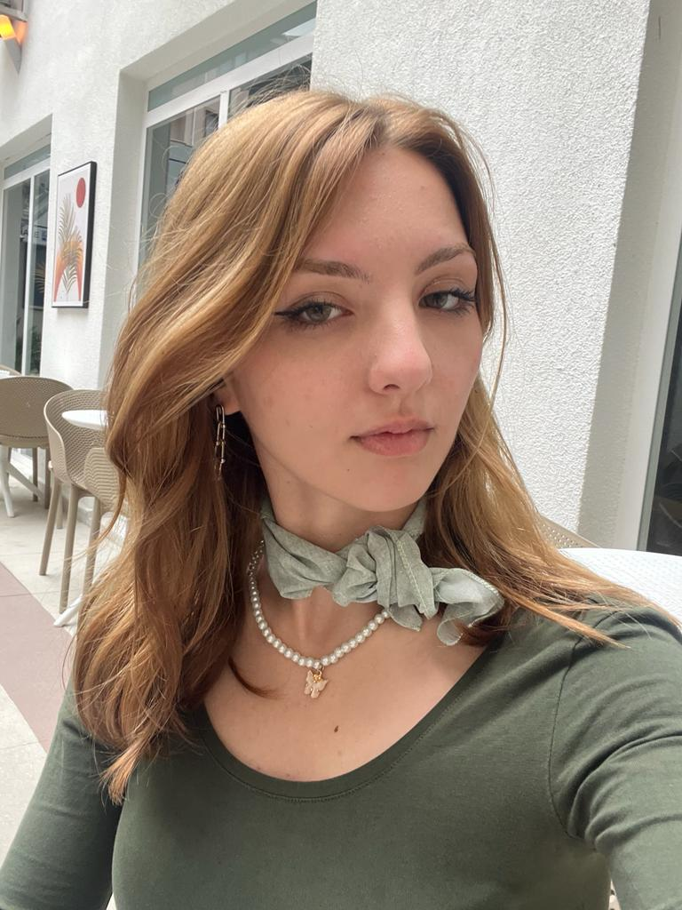

The Talented People Behind the Scenes of the Organization

Beyda Bucak
Chief Executive Officer
The CEO's role in raising a company's corporate IQ is to establish an atmosphere that promotes knowledge sharing and collaboration.
Silene Tokyo
Product Design Head
The emphasis on innovation and technology in our companies has resulted in a few of them establishing global benchmarks in product design and development.
Johnson Stone
Manager Development
Our services encompass the assessment and repair of property damage caused by water, fire, smoke, or mold. We can also be a part of the restoration.
Dean Jones
Principal Software Engineer
An avid open-source developer who loves to be creative and inventive. I have 20 years of experience in the field.
Rachel Adams
Product Design Head
Product designer with interests in immersive computing and XR, political ventures, and emerging technologies. Able to take ideas and give them a life.
Charles Keith
UX Designer
A UX designer is the voice of the customer. Our job is to look beyond the business goals. We don't just experience user interface but also questions it.
Thank you for taking a look at us. Here is a little award for you!